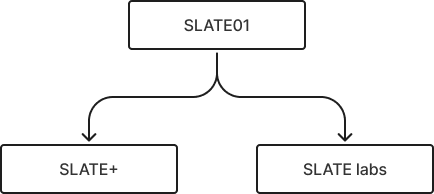
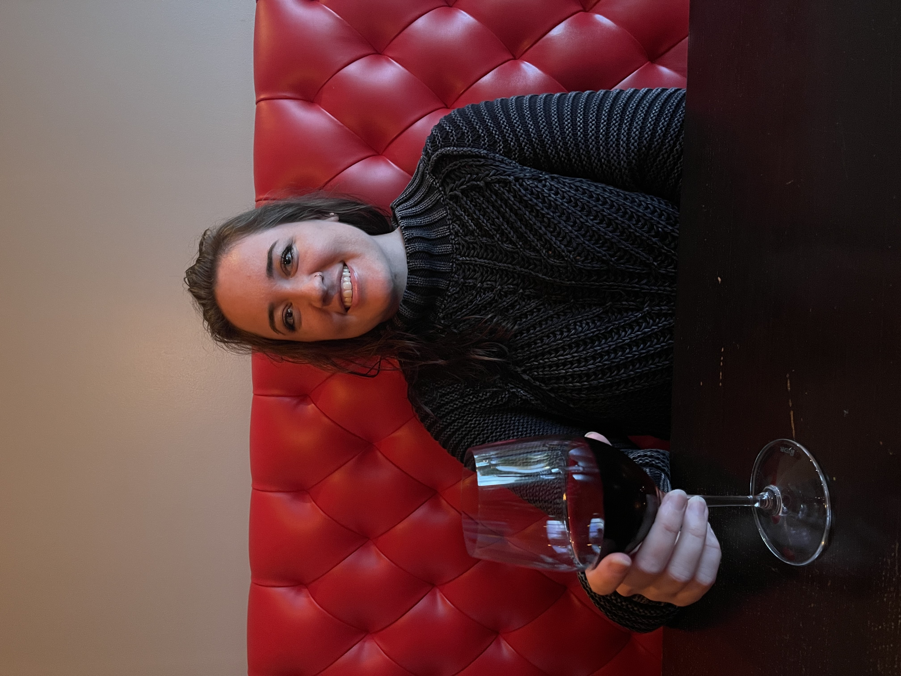

Tracy Gustafson
women owned, women operated
Small business in Cross Lake, Minnesota.
BACKGROUND
SLATE01 is a mother and daughter company founded in 2025. Tracy Gustafson took on business ownership and handling financial decisions for the company, holding the role of President/CFO. She has 20 years of experience owning and operating a small business, and also has a background in accounting and finance.
Molly Gustafson, daughter of Tracy, having studied software engineering at University of Minnesota, developed the structure & technical aspects of the company. She built the foundation of the company and the website during her 530hours internship with DEED, having mentorship from Jacob McArthur, Director of the program at the time. She moved into the role of Founder & Software Engineer in 2026.
DIRECTION
Our main focus areas are to provide affordable solutions to small businesses, provide entry-level full-stack full-cycle development experience for interns in the software / computer engineering fields - prioritizing students in rural MN who might not have access to these types of experiences, & promote women in STEM.
Small business in Cross Lake, Minnesota.
BACKGROUND
SLATE01 is a mother and daughter company founded in 2025. Tracy Gustafson took on business ownership and handling financial decisions for the company, holding the role of President/CFO. She has 20 years of experience owning and operating a small business, and also has a background in accounting and finance.
Molly Gustafson, daughter of Tracy, having studied software engineering at University of Minnesota, developed the structure & technical aspects of the company. She built the foundation of the company and the website during her 530hours internship with DEED, having mentorship from Jacob McArthur, Director of the program at the time. She moved into the role of Founder & Software Engineer in 2026.

DIRECTION
Our main focus areas are to provide affordable solutions to small businesses, provide entry-level full-stack full-cycle development experience for interns in the software / computer engineering fields - prioritizing students in rural MN who might not have access to these types of experiences, & promote women in STEM.

Molly Gustafson